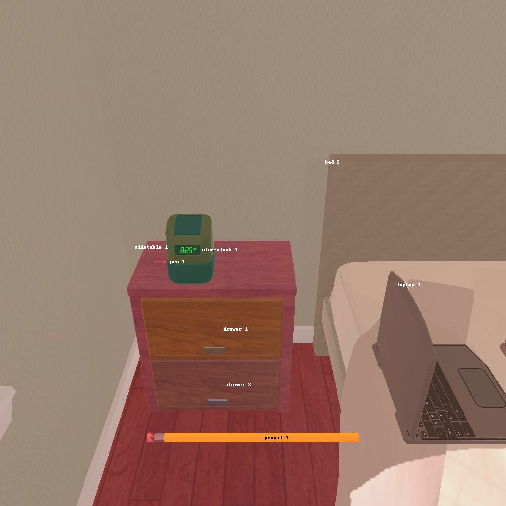
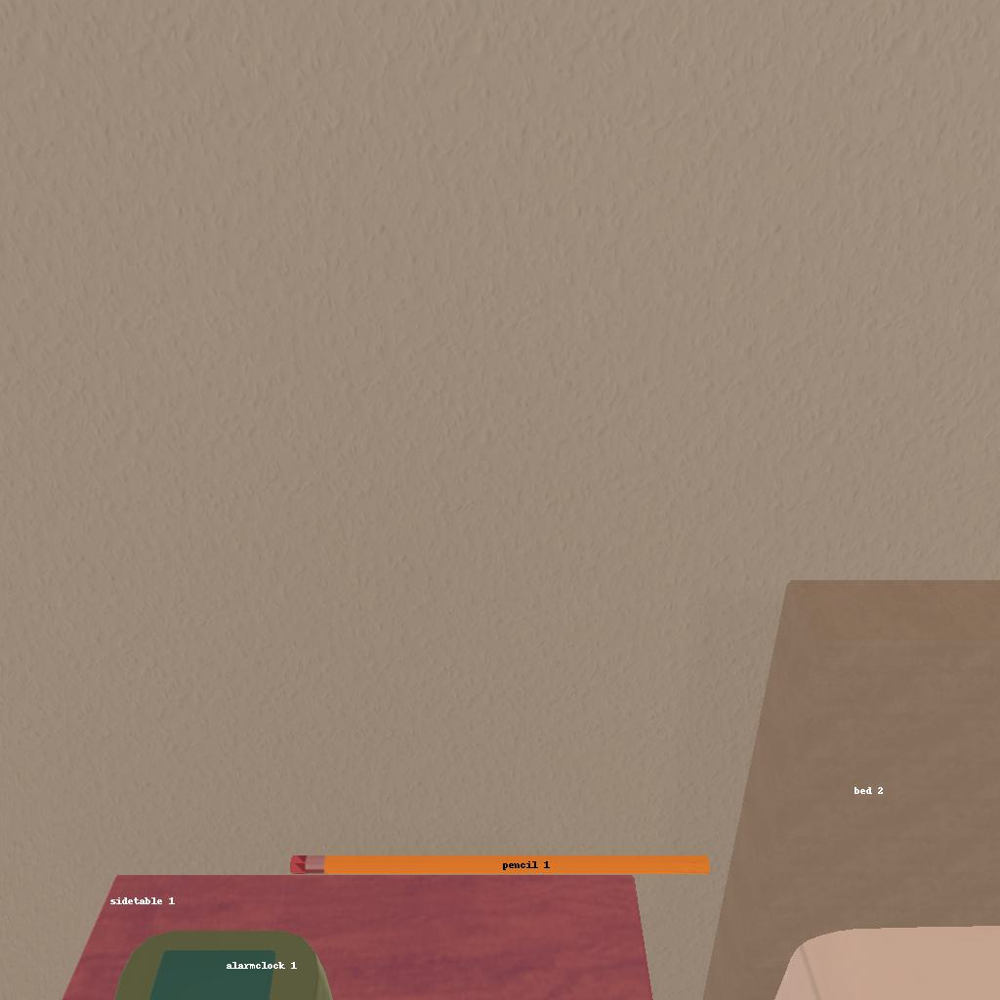

---------------------------------------------------------task: 2---------------------------------------------------------
--------------------------------------------------------------------------------------------------------------------------------------------------------------------
--------------------------------------------------------------------------------------------------------------------------------------------------------------------
Step:--------------------------------------------------------------------------14-------------------------------------------------------------------------------
----------------------------------------
VLM Prompt:
Image1:
Image2:
**Instruction**
1. Analyze the provided image to identify all visible household objects, focusing on those relevant to the task description "examine the pen with the desklamp."
2. Use the analysis of the image and the task hint "The agent must find an object of the desired type, locate and turn on a light source with the desired object in-hand." to answer the question: what is the most reasonable action in the choices for the task description "examine the pen with the desklamp"?
4. Decide and write the answer using the template: The answer is: (i): , where i is the real number. If there is no desired object in the image, search every place based on **Initial Observation** to find the object. And if no one is exactly correct, choose a similar answer.
**Initial Observation**
You are in the middle of a room. Looking quickly around you, you can see bed (1-2), dresser (1), drawer (1-11), sidetable (1-2), desk (1), garbagecan (1), safe (1)
**Answer Choices**
(1): go to bed 1
(2): go to dresser 1
(3): go to bed 2
(4): go to drawer 2
(5): go to sidetable 2
(6): go to drawer 3
(7): go to drawer 4
(8): go to desk 1
(9): go to garbagecan 1
(10): go to drawer 5
(11): go to drawer 6
(12): go to drawer 7
(13): go to drawer 8
(14): go to drawer 9
(15): go to drawer 10
(16): go to drawer 11
(17): go to safe 1
(18): put pencil 1 in/on sidetable 1
(19): examine pencil 1
(20): examine sidetable 1
**Answer**
Let's think step by step by following the instructions.
----------------------------------------
----------------------------------------
Original Response:
First, we need to identify all visible household objects relevant to the task. In Image 1, we can see a sidetable (labeled as sidetable 1), an alarm clock (labeled as alarmclock 1), a pen (labeled as pen 1), two drawers (labeled as drawer 1 and drawer 2), a bed (labeled as bed 2), and a laptop (labeled as laptop 1). Image 2 shows a sidetable (labeled as sidetable 1), an alarm clock (labeled as alarmclock 1), and a pencil (labeled as pencil 1).
Based on the task description "examine the pen with the desklamp" and the task hint, the agent must find a pen and locate and turn on a light source with the pen in hand. Since there is no desklamp visible in the images, we must rely on the initial observation to locate it. The initial observation mentions a desk (1), which is typically where a desklamp would be located.
Therefore, the most reasonable action to complete the task would be to go to the desk, where the agent could potentially find a desklamp. However, none of the answer choices directly state "go to desklamp" or "turn on desklamp." The closest relevant action based on the provided choices and the initial observation would be to go to the desk.
The answer is: (8): go to desk 1.
----------------------------------------
----------------------------------------
>>> Refine Original VLM Response and Get Pure Action: go to desk 1
----------------------------------------
-----------------------------------------------------------------
Running time: 13.426364183425903 seconds
Total Money: 1.01
-----------------------------------------------------------------
-----------------------------------------------------------------
Text Observation:You arrive at loc 9. On the desk 1, you see a bowl 1, and a mug 1.
-----------------------------------------------------------------
UNSUCCEED